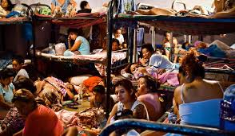
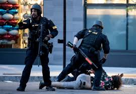
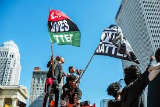
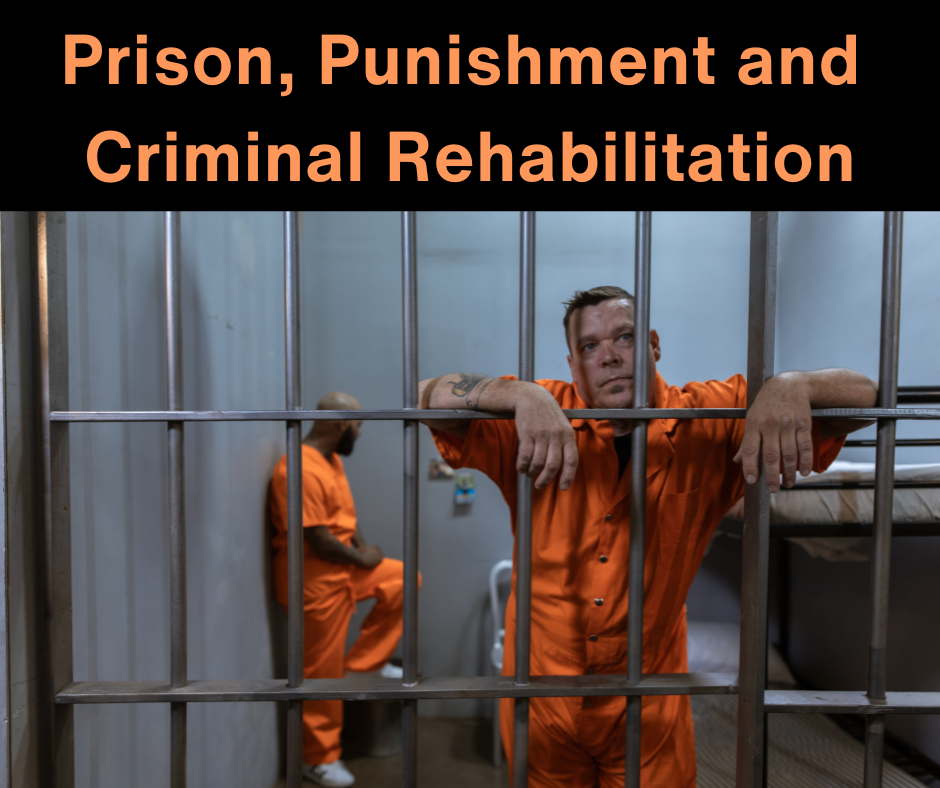

Current Issues in Crime and Justice
What are todays issues in crime and justice ?

Today, there are many discussions about how to improve the justice system. People are concerned about issues like overcrowded prisons and unfair treatment of certain groups. There are also debates about how police should handle difficult situations and how to increase accountability. Cybercrime is a growing issue because more activities happen online. Many experts are also focusing on rehabilitation, which helps people learn from mistakes instead of just punishing them. These issues are important because they shape how society deals with crime today and in the future.
what are some Current Issues
- Overcrowded prisons: too many people are jailed, creating unsafe and costly conditions. 
- Police accountability making sure officers follow rules and treat people fairly. 
- Cybercrime
hacking, online scams, and identity theft are increasing.

- Racial and social inequality some groups may face unfair treatment in the justice system. 
- Rehabilitation vs. punishment debates about whether the system should help people change or focus mainly on punishment. 